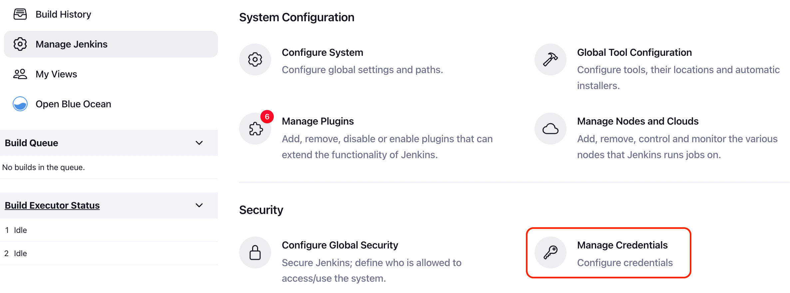
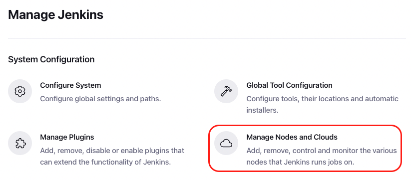
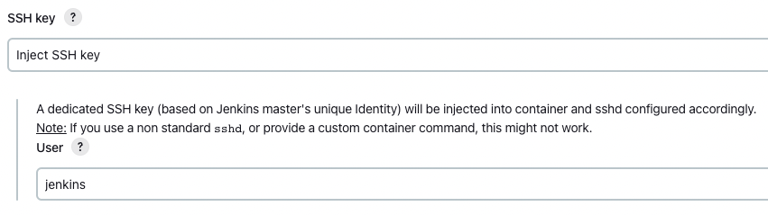
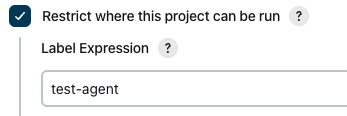

Dockerized Jenkins
Table of contents
Docker Installation
Consider using docker-compose to manage the containers. It makes your life easier.
The details are well documented in the link above.
The above documentation describes the need for two containers, one is a DinD (Docker in Docker) container and the other is the master Jenkins container.
The DinD container is used to enable Docker in the Jenkins container. This is accomplished by placing both containers in the same network and exposing the DinD TLS port (2376).
It is recommended to map both volumes jenkins-docker-certs and jenkins-data to the host filesystem to persist the data between container restarts.
For the Jenkins container, the documentation recommends two ports to be exposed: 8080 for the web UI and 50000 for the slave agent. However, if you are planning to use SSH agents you do not need to expose the 50000 port.
Disble built-in node executors on initialization
This is a recommendation described in the Github documentation.
Because you generally want to use agents to run your builds, it is advised to set number of executors in the built-in node to zero.
You can do so by creating executors.groovy,
// executors.groovy
import jenkins.model.*
Jenkins.instance.setNumExecutors(0)
And a Dockerfile extending the jenkins/jenkins image,
# Dockerfile
FROM jenkins/jenkins:lts-jdk11
COPY --chown=jenkins:jenkins executors.groovy /usr/share/jenkins/ref/init.groovy.d/executors.groovy
This Dockerfile can be further extended to initialize plugins and configure Jenkins.
Configure Docker node
TLS credentials for Docker
First navigate to Manage Jenkins > Manage Credentials,

Then create a global-scope credential of type X.509 Certificate.
This is the TLS certificate used by the DinD container to authenticate with the Jenkins container.
Assuming the name of the DinD container is jenkins-docker, you can get the required values by,
# Client Key
docker exec jenkins-docker cat /certs/key.pem | pbcopy
# Client Certificate
docker exec jenkins-docker cat /certs/cert.pem | pbcopy
# Server CA Certificate
docker exec jenkins-docker cat /certs/ca.pem | pbcopy
It is useful to set the credential ID to something you can recognize, like docker-tls.
Configure Docker
Now navigate to Manage Jenkins > Manage Nodes and Clouds > Configure Clouds,

Then create a new cloud of type Docker,
Docker Host URI
tcp://docker:2376 or leave blank if you’ve already set the DOCKER_HOST environment variable.
Server credentials
Select the credential you created above, i.e. docker-tls.
Enabled
Make sure it is checked.
Configure Docker Agent
Then add an agent with Docker Agent Template,
Label, Name
Set Label to something you can recognize because it will be used in your pipeline, i.e. test-agent
Just give it a matching name.
Docker Image
You need to have a Docker image pushed to a remote repository for this option, or prepare local image beforehand.
Image can be from a public or private repository, but if you’re using a private one, remeber to generate an access token from Docker Hub and add it to Jenkins via Registry Authentication.
The Docker image should be based on the functionalities of either jenkins/agent or jenkins/ssh-agent image.
The former uses JNLP for connection to agents, while the latter uses SSH.
Enter the image name and tag.
Remote File System Root
Set it to /home/jenkins.
Usage
I prefer Only build jobs with label expressions matching this node because you can specify types of jobs to run on this agent in the pipeline configuration.
Connect method
This depends on the Docker image you configured above.
If your image is Jenkins agent executable/JNLP based, select Connect with JNLP.
If your image is SSH based, select Connect with SSH.
Following example is for SSH agents.

Use Docker agent in jobs
Create a new FreeStyle project for testing purposes.
In General, set the following to a label you configured above.

References: